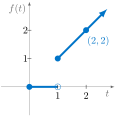

Print preview
Handout Daily Prep 3.1 - The Laplace Transform
Section Overview
In this section, we introduce the Laplace transform as a powerful method for solving differential equations by converting them into algebraic equations. We explain how the transform takes a function of time and produces a new function of a frequency-like variable \(s\text{,}\) allowing difficult ODEs to become simpler algebraic expressions that can be solved and then inverted. We also see motivating examples, including its usefulness for handling discontinuous inputs and modeling physical systems such as forced oscillators and electrical circuits.
Section Basic learning objectives
These are the tasks you should be able to perform with reasonable fluency when you arrive at our next class meeting. Important new vocabulary words are indicated in italics.
-
Understand the definition of the Laplace transform and how it converts a time-domain function into an \(s\)-domain function.
-
Explain how solving ODEs becomes easier by transforming them into algebraic equations.
-
Recognize common Laplace transforms through simple examples such as constants and exponentials.
Section Learn!
Complete the actions listed below.
-
Watch Video 3.1.1: Intro to Laplace Transform (11:52) by Trevor Bazett.
-
Watch Video 3.1.2: Linearity, Existence, and Inverses of the Laplace Transform (7:14) by Trevor Bazett.
-
(Optional) Watch video Introduction to The Laplace Transform (8:31) by Mathispower4u.
-
(Optional) Watch video Introduction Laplace Transforms (3:47) by Mathispower4u.
-
(Optional) Watch video The Laplace Transform of the Unit Step Function (3:50) by Mathispower4u.
-
Watch video The Existence and Uniqueness of a Laplace Transform (5:34) by Mathispower4u.
-
Watch video Introduction to Inverse Laplace Transforms (8:56) by Mathispower4u.
-
Watch Video 3.1.3: Translation and Inverse Laplace Transforms of Irreducible Factors (12:10) by Trevor Bazett.
-
Watch Video 3.1.4: Inverse Laplace Transform with Repeated Factors (8:29) by Trevor Bazett.
-
Watch Find Basic Inverse Laplace Transforms (5:04) by Mathispower4u.
-
(Optional) Watch Laplace Transforms (38:34) from MIT OpenCourseWare. This is Herbert Gross. Black and white video and old school but still quite good!
-
For an absolutely beautiful and insightful introduction to the subject via MIT, watch MIT 18.03 Differential Equations, Spring 2006 (47:40). The basic idea of this transform is to replace a DE with an algebraic equation, solve the algebraic equation, and then transform back to identify a solution. It is particularly useful when solving IVPs having discontinuous terms.
-
(Optional) Watch Laplace Transform, part 1 (34:15) and Laplace Transform, part 2 (24:32) for a lecture on section 3.1.
-
Try these additional questions. If necessary, use AI to guide your thinking.
-
If \(f(t)\) is defined for \(t \geq 0\text{,}\) then its Laplace transform is defined by \({\cal{L}}[f(t)] = ?\text{.}\)
-
Draw a graph of the functions from Example 3.1.4.
-
In your own words, what does it mean for a function to be of exponential order?
-
Suppose \(f(t) \equiv 1\) on \([0,\infty)\text{.}\) Compute \({\cal{L}}[f(t)]\text{.}\) What is the domain of \(F(s)\text{?}\) [Try not using Example 3.1.1 as a crutch.]
-
Suppose \(f(t) = e^{at}\) on \([0,\infty)\text{.}\) Compute \({\cal{L}}[f(t)]\text{.}\) What is the domain of \(F(s)\text{?}\)
-
Using a table of Laplace transforms (Table 3.1), compute\begin{equation*} {\cal{L}}[3e^{2t}+ 2\sin^{2} 3t]. \end{equation*}What is the domain of \(F(s)\text{?}\) Hint: \(\displaystyle \sin^{2} x = \frac{1-\cos(2x)}{2}\text{.}\)
-
The unit step function is defined by\begin{equation*} u(t) = \left\{ \begin{array}{cc}0 & {\textrm{for }} t < 0 \\ 1 & {\textrm{for }} t \geq 0\end{array} \right\}. \end{equation*}
-
Graph the unit step function, \(u(t)\text{.}\)
-
Define \(u_{a}(t) = u(t-a)\text{.}\) Write \(u_{a}(t)\) as a piecewise-defined function and graph it.
-
Compute \({\cal{L}}[u_{a}(t)]\text{.}\)
-
-
Compute the inverse Laplace transform of \(\displaystyle F(s) = \frac{2s-3}{(s-3)(s+2)}\) by hand, using partial fractions and tables. Does AI agree with your result?
-
Compute the inverse Laplace transform of \(\displaystyle F(s) = \frac{3}{(s^{2}+4)(s^{2}+9)}\) using partial fractions and tables. Does AI agree with your result?
-
Use the definition of Laplace transform to compute \({\cal{L}}[f(t)]\) for the function \(f\) graphed in Figure 13.
Figure 13. Function \(f(t)\text{.}\) -
Use the definition of Laplace transform to compute \({\cal{L}}[g(t)]\) for the function \(g\) graphed in Figure 14.
![A graph of a piecewise function g(t). Along the t‑axis, the function is 0 from the origin up to t=a, shown by a horizontal line with a filled dot at t=0 and an open circle at t=a. From t=a to t=b, the function jumps to a constant value c, represented by a horizontal line at height c, with a filled dot at t=a and an open circle at t=b. For t greater than b, the function returns to 0, indicated by a horizontal line on the t‑axis starting at a filled dot at t=b and extending to the right with an arrow.](generated/latex-image/GraphLaplaceTransformB-2.svg)
Figure 14. Function \(g(t)\text{.}\) -
Find the inverse Laplace transform of \(\displaystyle F(s) = \frac{2s}{s^{2}-1}\text{.}\)
-
-
Do MyOpenMath questions from this section.
Section Advanced learning objectives
In addition to mastering the basic objectives, here are the tasks you should be able to perform, with practice:
-
Interpret the Laplace transform as moving between time and frequency domains, especially for systems governed by equations like \(m x'' + c x' + kx = f(t)\text{.}\)
-
Analyze why the Laplace method handles discontinuities and piecewise-defined inputs effectively.
-
Apply the Laplace transform framework to understand applications in areas such as signal processing, electrical circuits, and physical modeling.